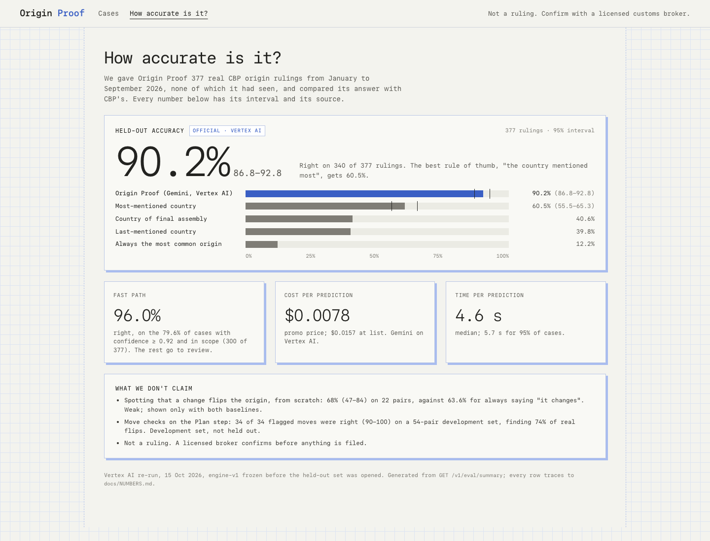
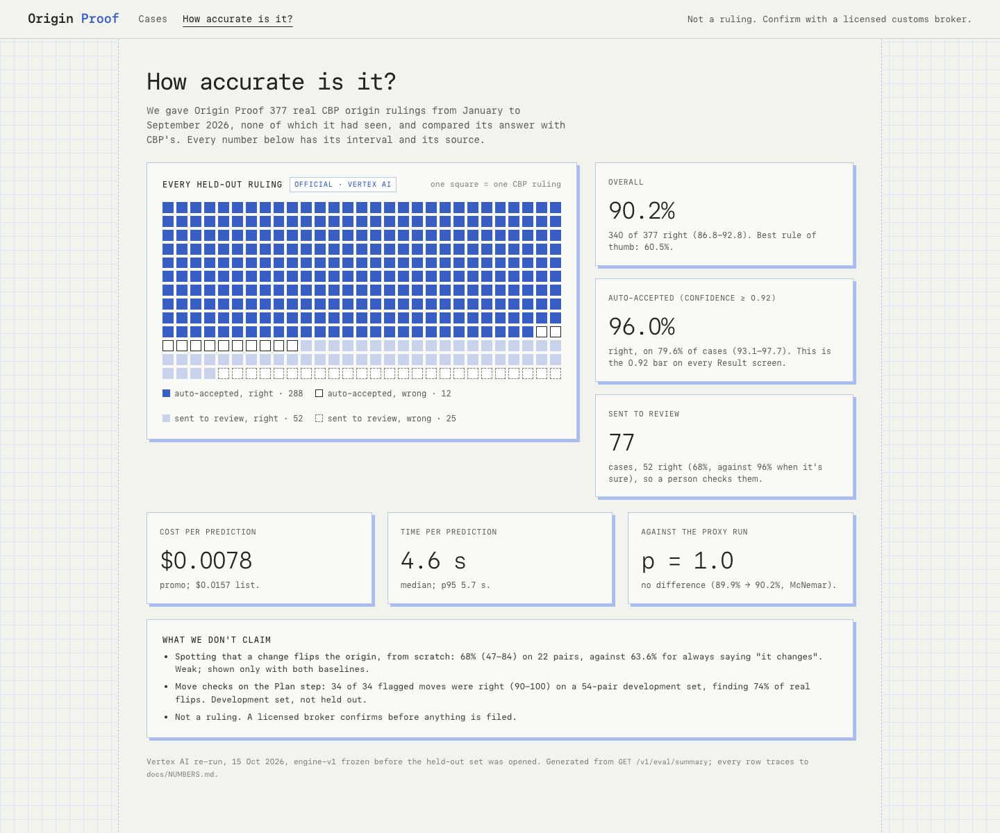
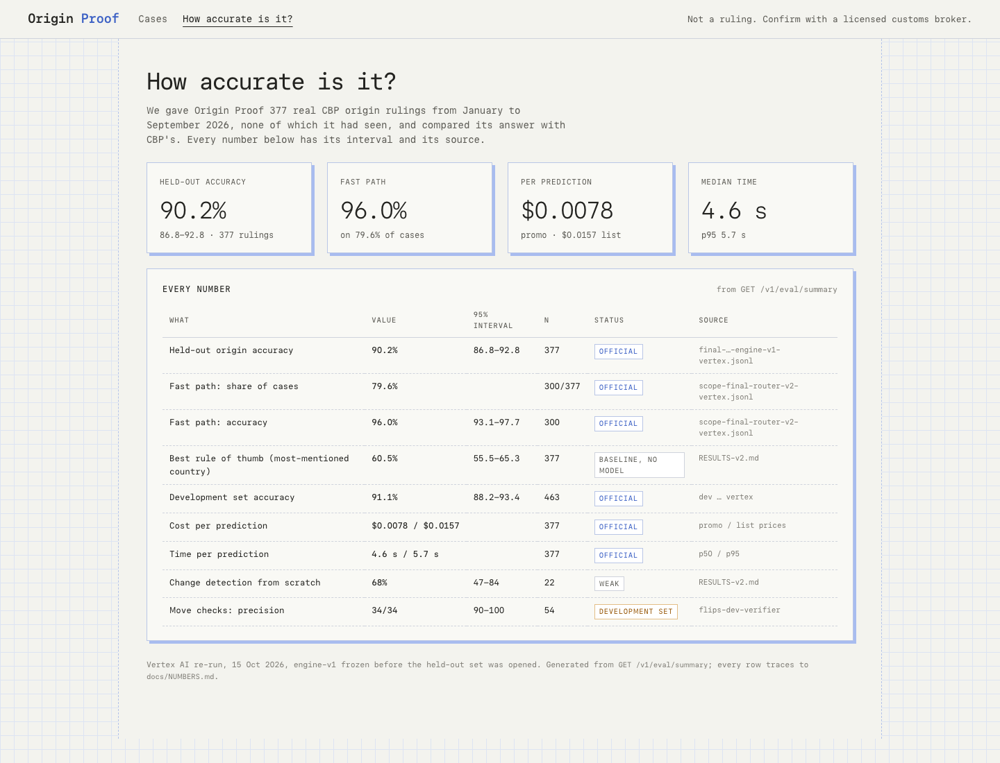

The page linked from the top bar on every screen. Official Vertex AI numbers (backend feat/origin-proof-vertex-eval 39eda27, D39), every one from docs/NUMBERS.md and served by GET /v1/eval/summary. Judges will likely open it, so it leads with the held-out result and keeps weak or development-only numbers visibly separate.



Combine them: B's squares as the hero (with the overall and fast-path cards), A's baseline bars under it, and C's table as "Every number" at the end with the not-claimed rows. One page, read top to bottom from story to evidence.